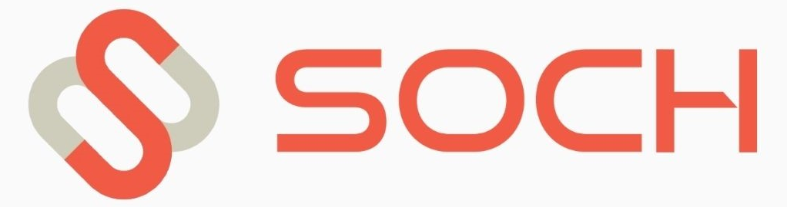

One on-site foundation day, then three guided touchpoints. It ends with a demo day where each of your departments shows a working automation it built itself — with a named owner and a metric attached.
EIS digitalization roadmap grant — support for mapping and building your firm's digital capability.
EIS development-activities grant — funding for concrete development work inside your company. Sized for exactly this kind of project.
Eesti.ai AI implementation voucher through EISA — announced, not yet open. Worth being ready for.
And here's what external benchmarks keep showing: genuine, organisation-wide AI capability takes several weeks of reinforced practice — not a single good afternoon. One workshop produces enthusiasm. Four structured weeks produce departments that keep building after we're gone. The Sprint is shaped around how the skill actually sticks.
Claude Code on every device, Google Workspace connected (Drive, Sheets, Gmail, Calendar), and a working automation layer — briefings, task automation, internal alerts — from day one.
Your team splits into function-specific tracks and each track builds its own automation — fully guided at the start, increasingly on their own as the session goes.
Each department takes home a brief pulled from its actual workload, completes it independently, then reviews it with us.
Every department presents a working automation, names its internal owner, and sets one simple success metric. Adoption with accountability built in.
Six default tracks. We adapt the set to whichever functions your firm actually has.
Pipeline and outbound
Content and reporting
Invoicing and reconciliation
Scheduling and documents
Hiring and onboarding
Ticket triage
Claude installed across the team, Workspace connected, first automations live before we leave.
Each track builds its own automation — guided at first, more independent by the end of the session.
A take-home brief from each department's actual workload, done independently, reviewed together.
Each department demos its working automation, names an owner, and sets one success metric.
Rizwan leads the on-site day in Tallinn; Soch's technical team delivers the remote weeks.
Per company, for all four weeks. Where you land in that range depends on headcount and how many department tracks you run — you'll have the exact number before you commit.
Estonia's live €35,000 development-activities grant is sized for precisely this kind of project, with the €10,000 roadmap grant also open today — and the €20,000 AI implementation voucher on the way.
Grant eligibility depends on your firm's situation — we'll point you to the right measure on the scoping call.
Generic training gives every function the same lesson and nobody an outcome. The audit-first route spends weeks analysing before anything gets built. The Sprint starts building on day one, gives each department its own working automation and its own named owner, and ends in a demo — not a certificate, not a report.
Not a fit: manufacturing, retail, or large organisations with committee-driven purchasing. Single-team firms that just want the fastest visible win should look at our one-day AI Setup Day instead.
Book a 20-minute scoping call. We'll map your departments to the right tracks, give you an exact price, and point you to the grant that fits — then you decide.
More Growth. Less Chaos.